Let’s grow a
healthy farm!
Meet the farmer, count seeds, help a worm, and explore healthy soil. Ready, little farmer?
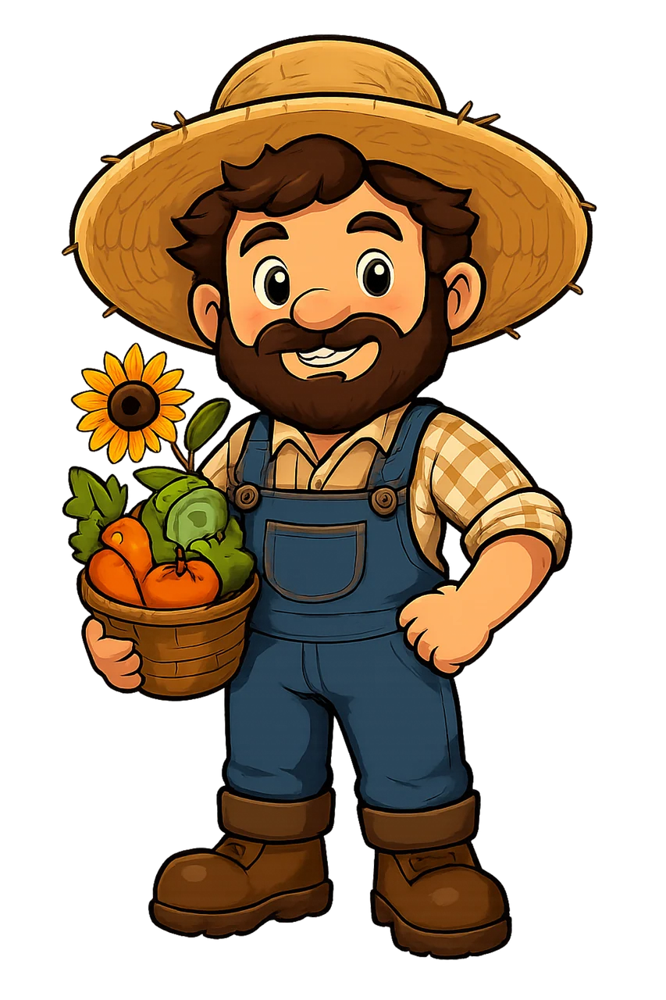
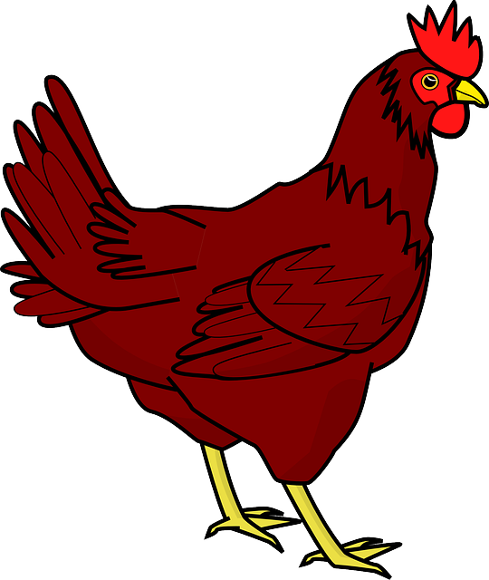
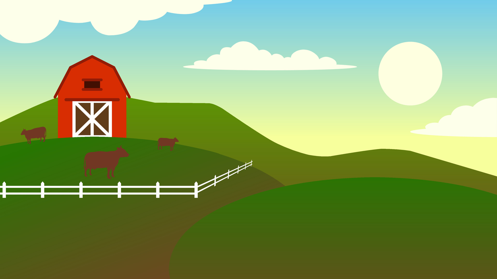
Six Little Missions
Count the Farm Friends!
Look at the insects on the farm. How many do you see?
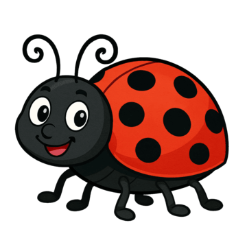
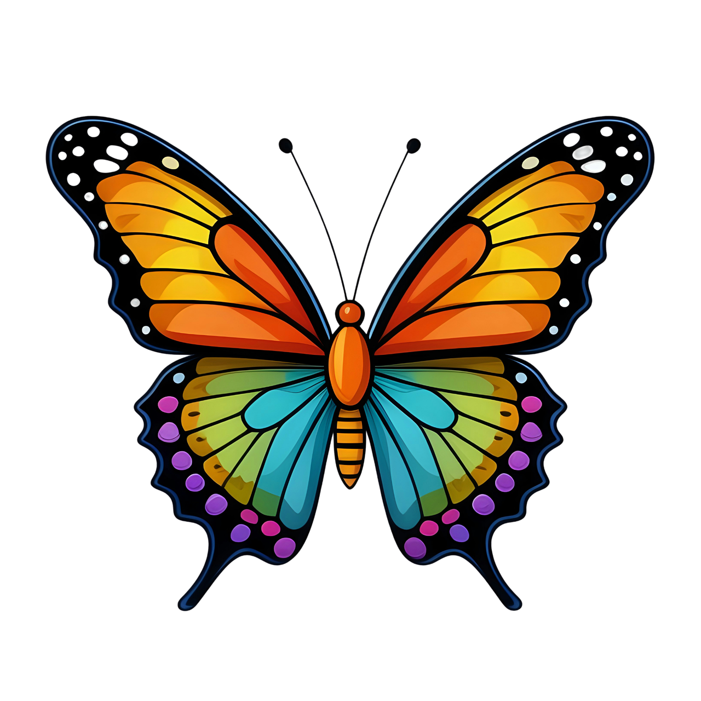
Touch a number!
Find the Soil Helper!
Our soil friends help make tunnels under the ground!
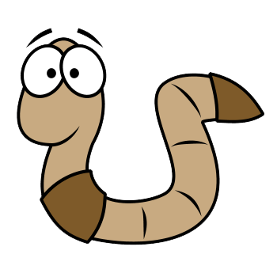
UNDER THE SOILTap your answer!
Help the Plants Grow!
Plants need care to grow big and strong!
Tap step 1 (The Seed) first!
How many cows on the farm?
Look at the cute cows. Count them, then choose the number!
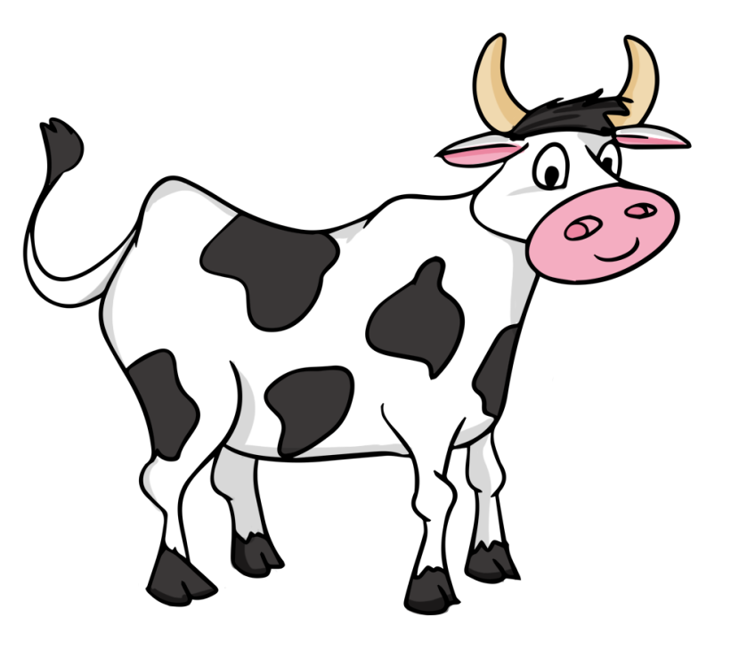
Touch a number!
Build the Soil Layers!
Healthy soil has distinct layers (horizons) that store nutrients, hold water, and feed plants for farming! Drag or tap the soil layer picture cards into their correct order from Top to Bottom.
Soil Diagram Reference

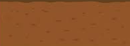
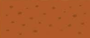
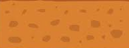
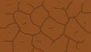
Drag or click a layer picture to start building the soil profile!
Test Your Soil & Farm Knowledge!
Answer these 3 quick questions about what you learned on the farm to earn your official Certificate Archive!
Question 1: Who helps make tunnels and enrich the soil underground?
Question 2: Which soil layer is right at the top, rich in humus and plant roots?
Question 3: Why is healthy soil so important for agriculture and farming?
You did it, little farmer!
You completed all missions and earned your official Soil Health diploma!